§01
실적
GMP 솔루션 개발 착수제약·바이오 문서·품질 시스템 구축 경험
제약 · 바이오 도입 고객사국내 주요 제약사 다수
GxP 전담 조직GMP · IT 전담 조직 상시 운영
CSV 수행 실적자체 CSV팀 + 전문 파트너 협업
§02
현장 이야기
현장에서는 아직도
이런 일이 반복됩니다
담당자의 꼼꼼함만으로는 한계가 있습니다. 현장이 말하는 세 가지 불편입니다.
- Situation 01“기록이 여러 곳에 흩어져 있어요.”종이·엑셀·메일에 흩어진 기록은 누락과 버전 오류를 만듭니다.
- Situation 02“실사 다가오면 야근이 늘어나요.”자료를 다시 찾고 대조하느라 실사 대응은 매번 사람에게 의존합니다.
- Situation 03“시스템마다 정보가 달라요.”문서·교육·품질·시험이 분리되면 변경과 이력의 추적성이 끊깁니다.
BQUBE가 답합니다
- 기록은 한 곳에문서·교육·품질 기록을 BQUBE 하나에서 관리합니다. 로그인 한 번, 권한 설정 한 번입니다.
- 실사 자료는 바로 조회통합 Audit Trail에서 변경 이력과 근거를 바로 찾습니다.
- 변경은 자동으로 연결SOP 승인 → 교육 배정 → 품질 연계까지 전 프로세스가 자동으로 흘러갑니다.
이 문제는 개인의 주의만으로 해결되지 않습니다. 규정 준수와 데이터 무결성을 시스템으로 관리해야 합니다.
§03
담당 업무별
담당 업무별로
달라지는 점
QA·QC 현장에서 가장 자주 듣는 이야기를 정리했습니다.
QC 담당자
지금장비 데이터를 또 옮겨 적어야 하나? 지금 쓰는 시험법이 최신인지도 매번 확인합니다.
도입 후장비 데이터를 자동 수집해 결과까지 채워 넣고, 최신 SOP·시험방법을 자동 연결합니다.
LIMS 데모 신청QA 담당자
지금일탈이 발생해도 어디까지 처리됐는지 모르고, 실사 때는 기록 찾느라 시간을 씁니다.
도입 후발생 즉시 알림과 Workflow가 시작되고, 진행 현황·지연 업무는 자동 모니터링, 감사 자료는 통합 조회됩니다. 절차가 바뀌면 QA가 QMS Builder에서 직접 수정합니다.
QMS 데모 신청문서 · 교육 담당자
지금이게 최신 버전 맞나? 배포는 빠지지 않았나? 누가 교육을 안 들었는지 매번 확인합니다.
도입 후버전·배포·변경 이력이 자동 관리되고, 문서가 개정되면 교육이 자동 생성돼 미이수자까지 관리됩니다.
EDMS · LMS 데모 신청QC · QA 관리자
지금오늘 병목이 어디인지, 누가 어느 단계에서 멈췄는지 한눈에 보이지 않습니다.
도입 후업무 현황 Dashboard와 Workflow 실시간 모니터링으로 위험·지연 업무를 자동으로 알려드립니다. 개발·구축·CSV·운영을 한 팀이 맡아 문의 창구도 하나입니다.
도입 기간 · 비용 상담§04
개발부터 운영까지
개발부터 운영까지,
페이지원이 직접 진행합니다
개발·구축·검증(CSV)·운영을 협력사에 나누지 않습니다. 같은 조직이 처음부터 끝까지 수행해 설계 의도와 현장 맥락이 구축에서 운영까지 그대로 이어집니다.
- 개발BQUBE 제품 자체 개발GxP 이해 기반 설계
- 구축요건 분석 · 현장 구성GMP 전문 PM이 리드
- CSVIQ·OQ·PQ 전 단계 수행GAMP 5 기반 검증
- 운영Go-Live 이후 상시 지원만든 팀이 그대로 운영
도입 3단계와 CSV
- Action-Plan 수립 · URS 작성
- 유관부서 합의 (본사 · 생산 · QA · QC)
- 인프라 · 연계시스템 설계
- 업체선정 · 사용 중인 고객 견학
- CSVValidation 계획 수립
- CSVKick-off · Milestone 확정
- 대상시스템 연동 (ERP · SSO · MES/POP · QMS)
- 데이터 마이그레이션
- CSVDQ / IQ / OQ / PQ 대응
- 관리자 · 사용자 교육 → Go-Live
- Go-Live 안정화 · 오류 패치
- MA : 하자보수 · 실사 대비 긴급 지원
- Deviation · CAPA 지원
- CSV업그레이드 연 2회
CSV 표시 단계는 IT QA팀 산하 CSV팀 · QA팀이 직접 들어갑니다. 개발 인력이 겸임하지 않고, 외주로 넘기지도 않습니다.
§05
인증 지원 실적
고객사가 받은 인증이
저희 레퍼런스입니다
시스템 구축으로 끝나지 않습니다. 실사 대응까지 함께해 고객사가 실제 인증을 획득했습니다.
국제 표준 인증
- ISO 9001:2015품질경영시스템
- ISO 14001:2015환경경영시스템
- ISO 45001:2018안전보건경영시스템
- 인증범위 “GMP 통합관리 솔루션 개발 및 공급” · IBGC · 2026.03.26 ~ 2029.03.25
§06
BQUBE 통합 플랫폼
낱개 모듈이 아니라
연동된 한 벌로 씁니다
품질·연구·생산 전 영역 모듈이 하나의 플랫폼에서 연동됩니다. 모듈 간 연동은 별도 비용이 없어, 추적성과 DI 수준을 그대로 확보합니다.
품질 · 문서 · 교육 관리
실험실 · 임상 · 연구
생산 · 제조실적
연동 관계
EDMS 한 축에 네 개 모듈이 맞물립니다
문서가 기준이 되고 시험·생산·품질·교육이 그 문서를 참조합니다. 아래는 소개서 모듈별 연계 I/F 표를 그대로 옮긴 것입니다.
| LIMS | ELN | POP | EDMS | QMS | LMS | |
|---|---|---|---|---|---|---|
| LIMS | 시험의뢰 · 결과 | SOP 참조 | 이벤트 · OOS | |||
| ELN | ||||||
| POP | 시험의뢰 · 결과 | 제조지시서 | ||||
| EDMS | SOP 참조 | 제조지시서 | 문서 참조 | 교재 배포 | ||
| QMS | 이벤트 · OOS | 문서 참조 | ||||
| LMS | 교재 배포 |
ELN 은 모듈 간 연계 대신 실험기기를 직접 붙입니다 (SDMS · LAS).
외부 연계 ERP · WMS · SSO · MES. 구축 2단계에서 수행합니다.
01/09
BQUBE 플랫폼
GxP 통합 플랫폼 - 하나의 BQUBE로 EDMS·QMS·LMS 통합 관리
§07
BQUBE 플랫폼
BQUBE는 문서(EDMS)·품질(QMS)·교육(LMS) 세 시스템을 하나로 묶은 GxP 통합 플랫폼입니다. 세 시스템이 BQUBE CORE로 연계되어 승인된 SOP가 품질 프로세스와 교육 과정으로 자동 흐르고, 모든 활동이 단일 대시보드와 Audit Trail에서 통합 관리됩니다. 이중 입력 없이 Data Integrity를 보장하며, 자체 기술력 기반으로 연 2~3회 업데이트와 연동비용 무상을 제공합니다.
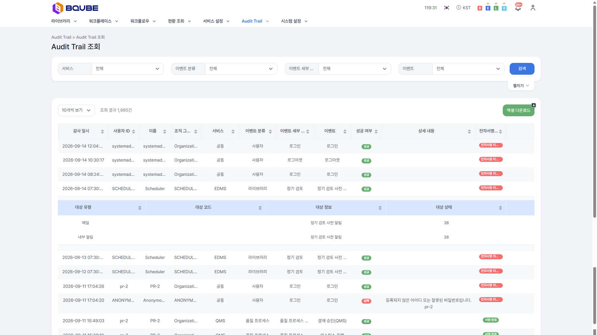
현장의 문제
- 각 시스템을 따로 운영하여 데이터 연계가 안 되고 이중 작업 발생
- 외산 S/W 도입 시 높은 비용과 맞춤화 어려움
해결 방식
- BQUBE CORE - EDMS·QMS·LMS를 하나의 플랫폼에서 통합 관리
- 단일 대시보드·Audit Trail로 문서·품질·교육 전 활동 통합 추적
- 자체 기술력 기반 - 현장 담당자가 직접 설계 참여
- 연 2~3회 S/W 업데이트 + CSV 변경관리 함께 제공, ERP·타 시스템 연동비용 무상
| 지표 | 값 |
|---|---|
| 통합 솔루션 | 3개 |
| S/W 업데이트 | 2~3회/년 |
| 연동 비용 | 0원 |
주요 기능
- FDA 21 CFR Part 11 준수
- Audit Trail 전 구간
- Data Integrity 보장
- SaaS/On-Premise
- 다국어 지원
- 전자서명
02/09
BQUBE-EDMS
전자문서관리 시스템 - BQUBE CORE 통합 관리
§08
BQUBE-EDMS
GxP 문서를 생성부터 폐기까지 전체 Life-Cycle에 걸쳐 일관성 있게 통합 관리하는 시스템입니다. SOP, 제품표준서, 기록서 및 Validation 문서까지의 전체적인 GxP 문서 관리를 제공하며, BQUBE CORE로 QMS·LMS와 연계되어 승인된 문서가 품질 프로세스·교육 과정으로 자동 흐릅니다.
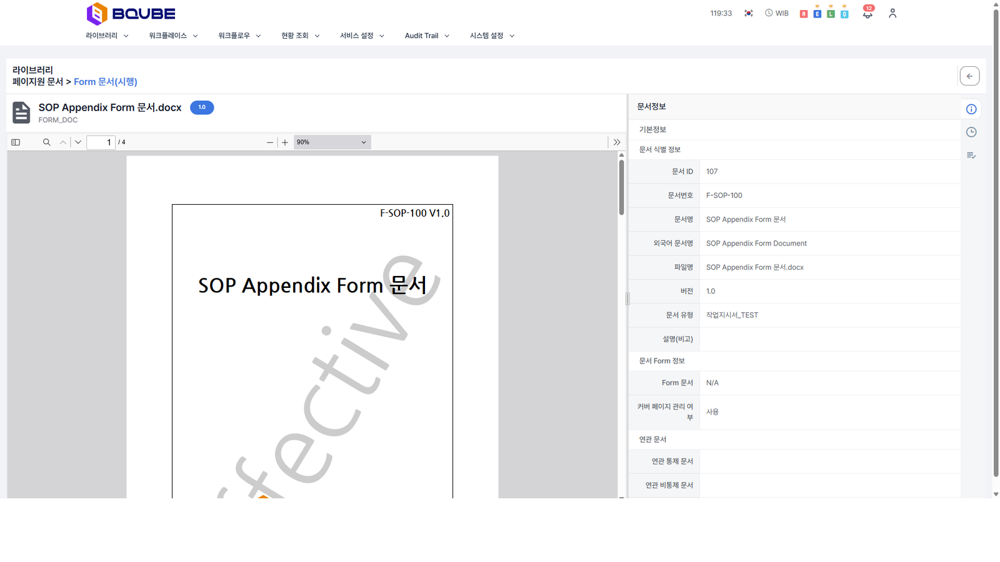
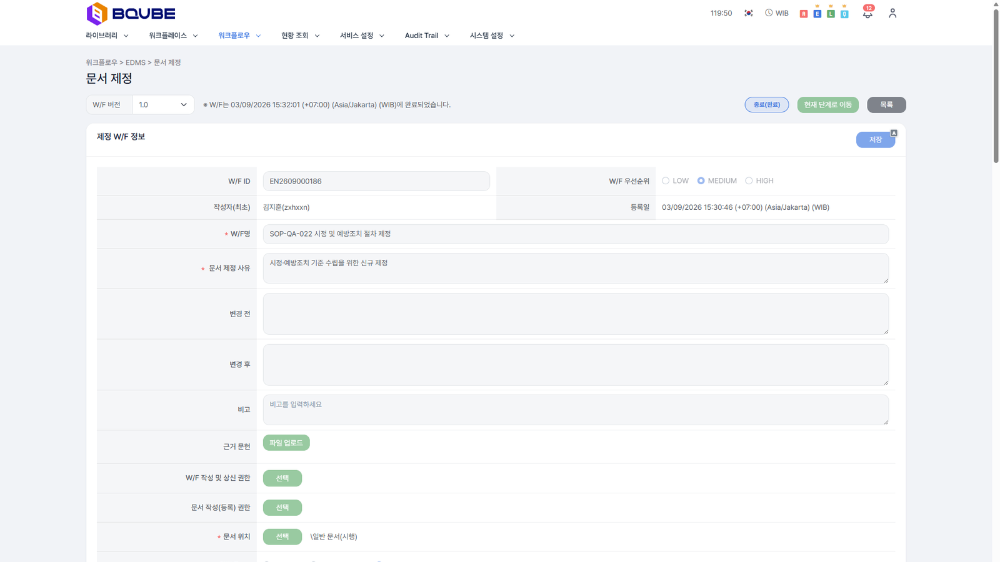
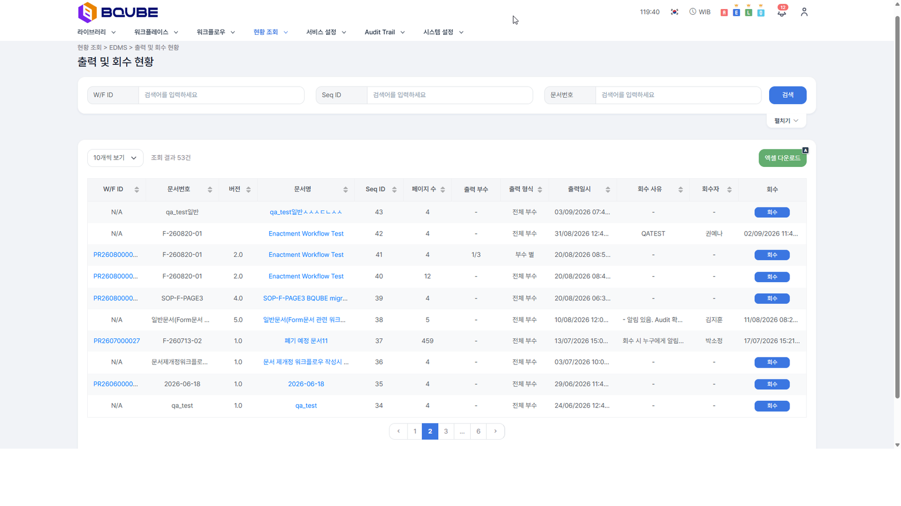
현장의 문제
- 종이 문서 관리로 분실/훼손 위험, 검색 불가
- 문서 결재/배포/회수가 수기여서 버전 관리 어려움
해결 방식
- BQUBE CORE 통합 - 승인 문서가 QMS 품질 프로세스·LMS 교육으로 자동 연계
- GMP 문서 Life Cycle 통합 관리 - 버전 통합 관리
- MS-Office 기반 편리한 작성 및 검토, 문서 비교 기능
- 출력 횟수/권한 관리, 문서결재/검토 특인 알람
| 지표 | 값 |
|---|---|
| 문서 관리 | Paperless |
| Life-Cycle 관리 | 전주기 |
주요 기능
- 내 대시보드
- 사이트 대시보드
- 문서 라이브러리
- 문서 상세보기
- 결재이력 조회
- 체크아웃/체크인
- Audit Trail
03/09
BQUBE-QMS
품질관리 시스템 - BQUBE CORE 통합 관리
§09
BQUBE-QMS
GMP 전반에 대한 품질관리를 전산화한 시스템으로, 제조 및 품질의 문제요소를 실시간 조치하고 교육 및 모니터링을 통해 일탈에 대한 사전 예방 및 관리 기능을 제공합니다. 프로세스 빌더와 디자인 편집기로 일탈·변경·CAPA 등 품질 프로세스를 직접 설계하며, BQUBE CORE로 EDMS 문서·LMS 교육 이력과 하나의 추적선으로 연결됩니다.
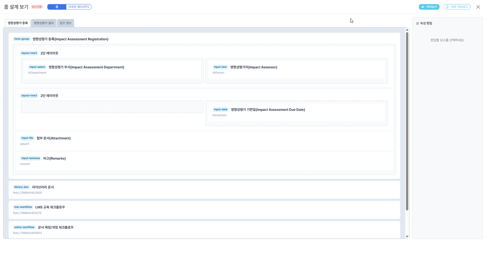
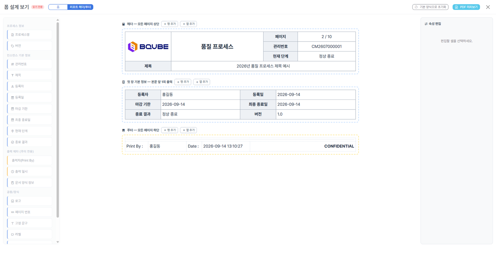
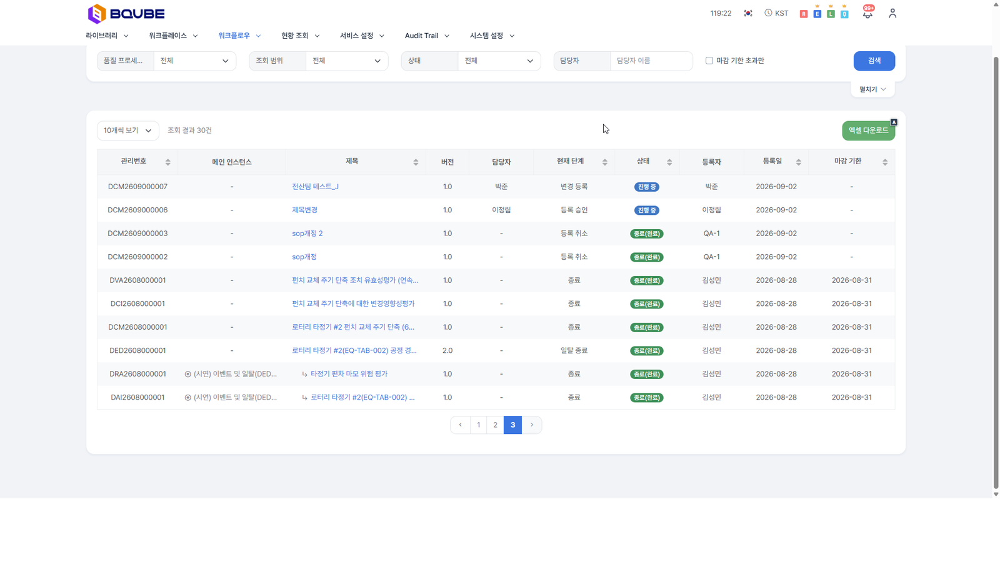
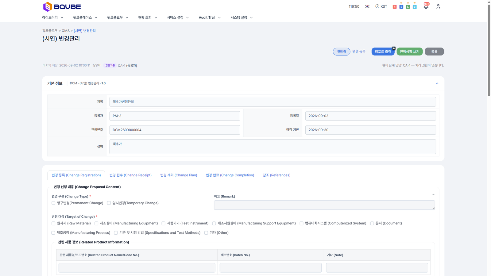
현장의 문제
- 품질 이벤트(일탈/변경/CAPA)를 수기로 관리하여 추적 어려움
- FDA/EMA 실사 시 문서 보존성 및 보안 문제
해결 방식
- BQUBE CORE 통합 - 품질 이벤트가 EDMS 문서·LMS 교육 이력과 단일 추적선으로 연결
- 프로세스 빌더·디자인 편집기로 품질 프로세스 직접 설계·자동화
- 품질 데이터 실시간 조회로 신속한 의사결정, Data Integrity 이슈 원천 제거
- FDA/EMA 실사 대응력 강화 - 문서 보존성 및 보안
| 지표 | 값 |
|---|---|
| 품질 모니터링 | 실시간 |
| 실사 대응 | FDA |
주요 기능
- 대시보드
- 워크플로우 Diagram
- 워크플로우 종류 선택
- 워크플로우 목록
- 워크플로우 상세보기
- Report
04/09
BQUBE-LMS
교육관리 시스템 - BQUBE CORE 통합 관리
§10
BQUBE-LMS
교육 준비에서부터 진행, 완료까지 전반적인 교육을 관리하기 위한 솔루션입니다. 교육 진행 상태 실시간 모니터링이 가능하며, 전자결재를 통한 이력 관리를 제공합니다. BQUBE CORE로 EDMS·QMS와 연계되어 SOP가 개정되면 해당 교육 대상과 이력에 자동 반영되고, 직무분석표 기반으로 필요한 교육을 배정합니다.
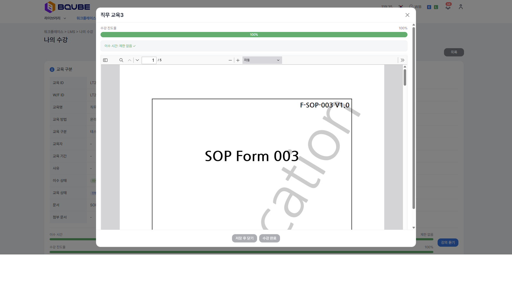
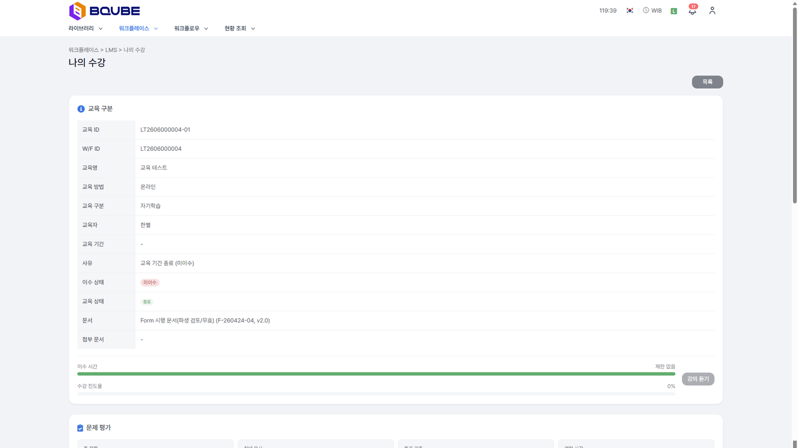
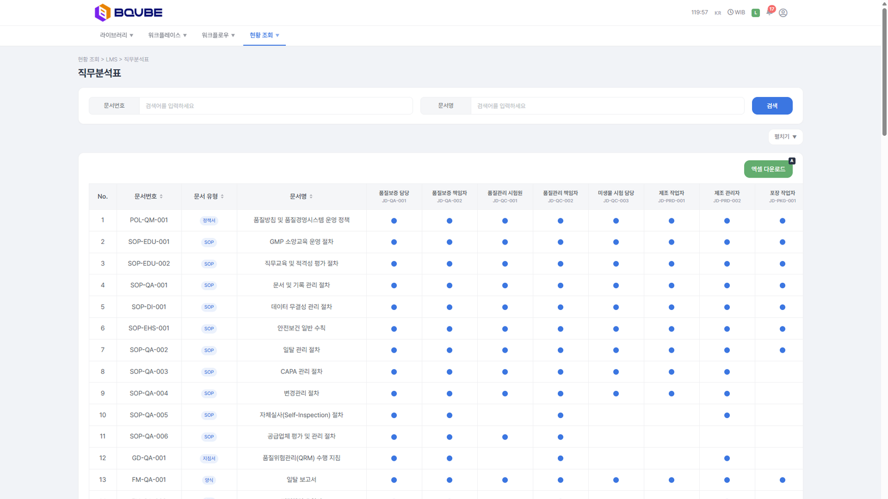
현장의 문제
- 교육 결과를 수기 기록하여 Data Integrity 확보 어려움
- 반복적인 교육에 대한 공수 부담, 빠른 실사 대응 불가
해결 방식
- BQUBE CORE 통합 - EDMS 문서 개정 시 교육 대상·이력에 자동 반영
- 직무분석표 기반 교육 배정, 다국어 지원
- 모든 Data 및 이력에 대한 Paperless - GMP 규정 준수
- Audit Trail·Data Integrity 준수, 교육 진행 상태 실시간 모니터링
| 지표 | 값 |
|---|---|
| 교육 관리 | Paperless |
| 진행 모니터링 | 실시간 |
주요 기능
- 교육 진행상태 조회
- 교육 상세
- 교육 등록
- 교재 등록
- 테스트 등록
- 결재 요청 목록
- 그룹 등록
- 사용자 등록
05/09
LIMS
실험실 정보관리 시스템 - LES 전자시험기록 · 기기 자동연동
§11
LIMS
GxP 실험실 환경에서 원료 및 제품, 실험기기, 실험방법의 Life-cycle 전반에 걸친 실험실 Data와 시험결과를 관리합니다. LES(전자시험기록) 모듈은 시험준비 → 시험방법 → Data Parsing → 시험결과로 이어지는 Step 기반 워크플로우로 시험 결과 입력과 리뷰를 지원하며, SDMS·LAS 모듈이 기기 원본 데이터를 자동 수집·파싱하여 전사·오기입 오류를 차단합니다.
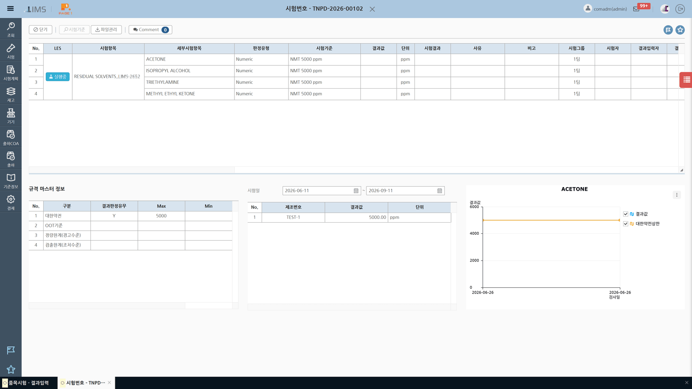
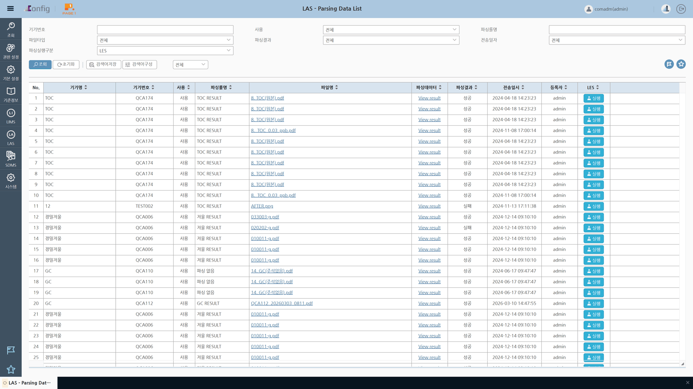
현장의 문제
- 분석 결과를 수기로 기록하면서 전사/오기입 오류 발생
- 장비 데이터를 수동 옮기느라 시간 소모, 실시간 현황 파악 불가
해결 방식
- CFR Part 11, 글로벌 GMP 규정 적합 - Audit Trail, Data Integrity 보장
- LES 전자시험기록 - Step별 진행·시험기준·장비·조건을 한 화면에서 관리
- 규격 마스터(대한약전·OOT 기준·정량한계·검출한계) 연계 자동 판정
- 제조번호별 결과 이력 및 관리도(Control Chart)로 품질 추이 파악
- SDMS·LAS 기기 연동 - 원본 파일 자동 수집 및 파싱 성공/실패 현황 모니터링
- ERP, MES 등 통합시스템과 유연한 연동, 다국어 지원
| 지표 | 값 |
|---|---|
| cGMP 규정 준수 | FDA |
| 기기 데이터 수집 | 자동 |
주요 기능
- 시험 의뢰
- 시험 결과 입력
- LES 전자시험기록
- Data Parsing
- 규격 마스터 관리
- 관리도(Control Chart)
- 기기 자동연동(SDMS·LAS)
- 출하 COA
- 기기 점검 관리
- Audit Trail
06/09
ELN
전자연구노트 솔루션 - 대시보드 · 구조화된 연구노트 작성
§12
ELN
연구자 지식재산권 확보에 이르기까지의 연구과정 및 연구성과를 전자문서 형태로 기록·저장하는 솔루션입니다. 대시보드에서 연구노트 현황·바로가기·일정을 한눈에 관리하고, 시험 개요·사용 재료·사용 기기가 구조화된 연구노트를 작성하며, SDMS·LAS 연동으로 기기 원본 데이터를 자동 수집하여 작성 시 활용할 수 있습니다.
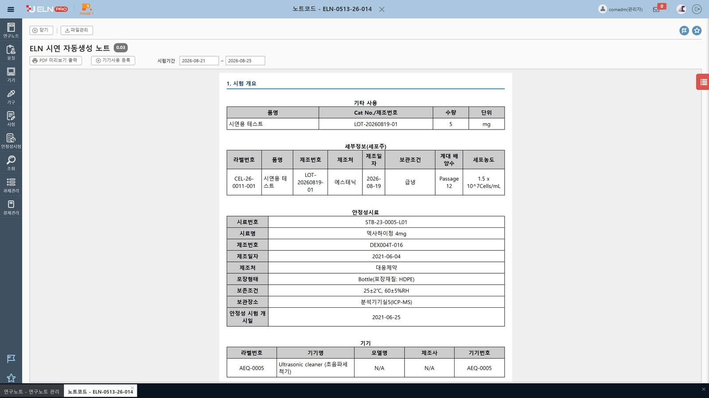
현장의 문제
- 종이 연구노트는 분실/훼손 위험이 크고 검색이 안 됨
- 수기 기록으로 Data Integrity 확보가 어렵고 법적 효력 입증 곤란
해결 방식
- 시점인증과 Audit Trail을 통한 법적 효력과 신뢰성 보장
- 대시보드 - 연구노트 현황·바로가기·일정을 통합 관리
- 시험 개요·사용 재료·사용 기기 등 구조화된 연구노트 작성
- SDMS·LAS 연동 - 기기 원본 데이터 자동 수집
- 물질/기기/기자재 관리 기능 내장
| 지표 | 값 |
|---|---|
| Data Integrity | DI |
| 기기 연동 | 자동 |
주요 기능
- 시험의뢰
- 연구노트 작성
- 과제 관리
- 안정성 시험의뢰
- 물질 관리
- 기기/기자재 점검
- Audit Trail
07/09
EBR
전자배치기록 - 제조지시부터 배치기록서 발행까지 종이 없는 GMP 생산
§13
EBR
SAP 기준정보 수신 → 전자 제조지시서(레시피) 작성 → MBR 결재·시행 → 현장 생산 실행 → 배치기록서(PDF) 발행까지 제조 기록의 전 주기를 하나의 시스템에서 관리합니다. 지시서에 정의한 변수가 그대로 현장 입력 항목이 되고 그 값이 그대로 배치기록서 출력이 되어, 옮겨 적는 구간과 전사 오류가 사라집니다.
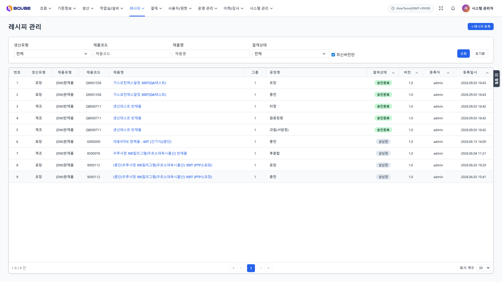
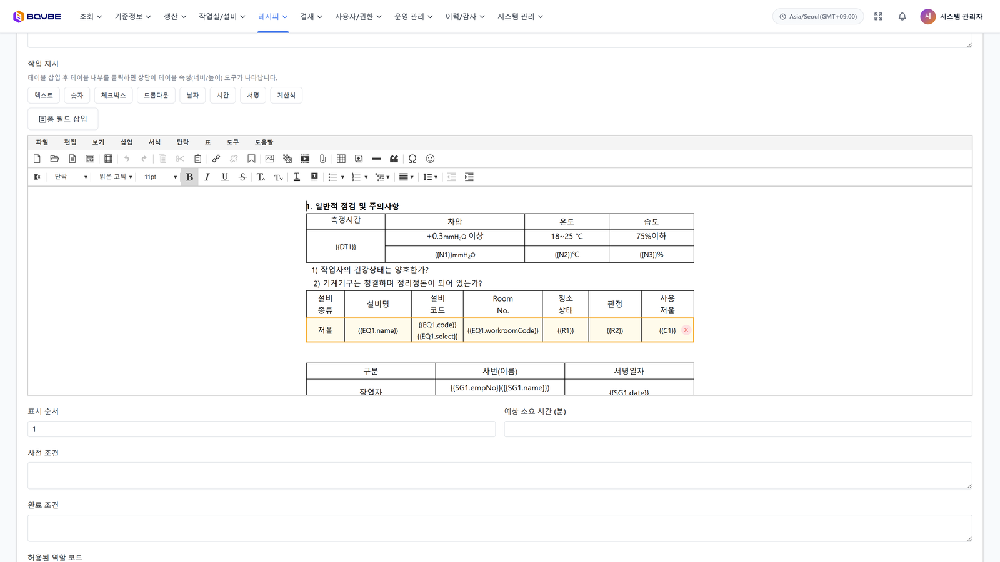
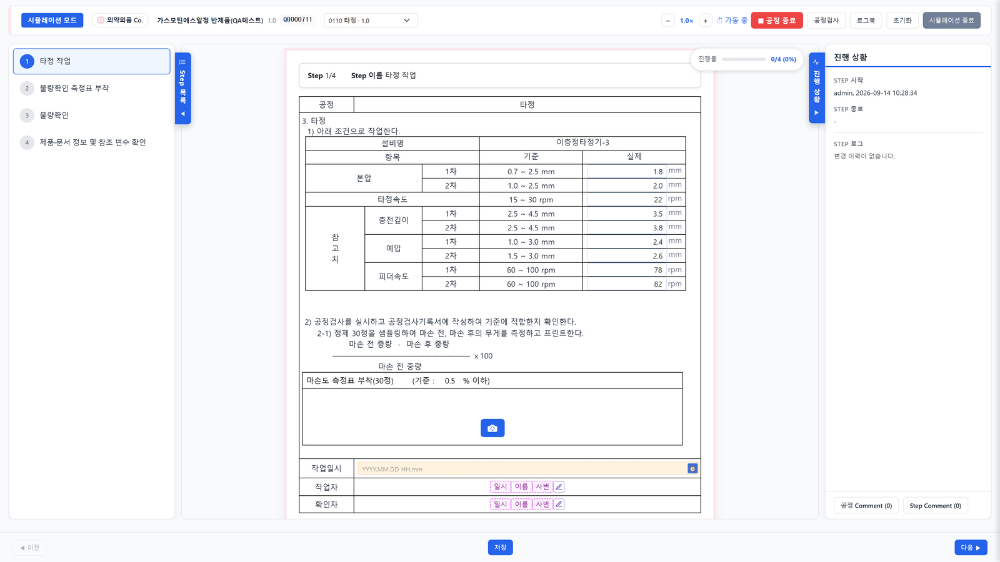
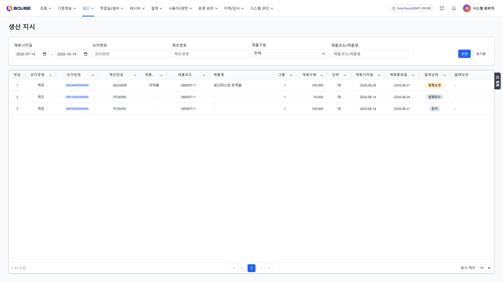
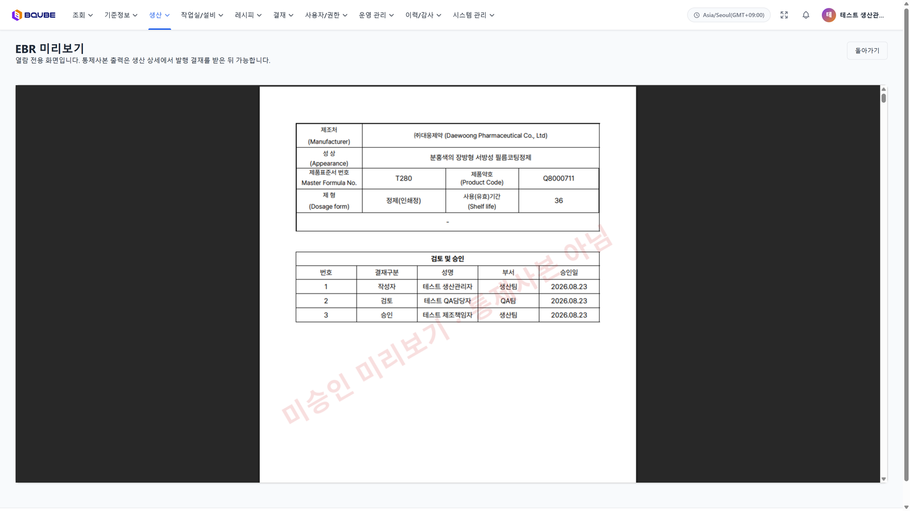
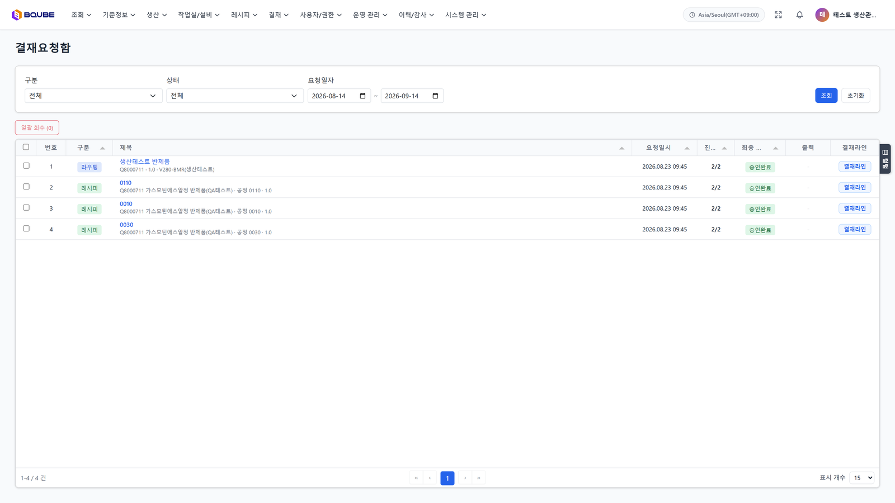
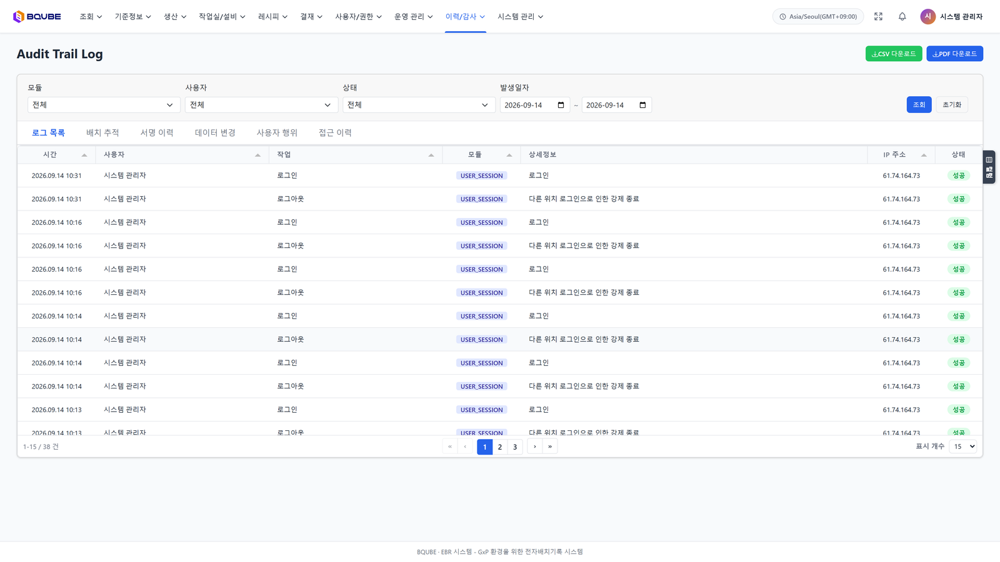
현장의 문제
- 배치기록서가 종이로 회람되어 검토·발행에 며칠이 걸리고, 빈칸·오기·후기입을 사람이 반복 확인
- Word·Excel 제조지시서(MBR)의 버전·시행일을 사람이 관리해 구버전이 현장에 남을 위험
해결 방식
- 지시서 변수 = 현장 입력 = 배치기록서 출력 - 단일 데이터로 전사 오류 원천 제거
- 승인 전 시뮬레이션으로 지시서 오류를 현장이 아닌 사무실에서 사전 검증
- 승인·시행 이중 상태 관리 - 시행일 자동 전환, 구버전 자동 만료로 이중 사용 차단
- 작업자격 연계 전자서명 및 결재선 스냅샷 - 자격 없는 서명 차단, 실사 시 당시 결재경로 재현
- SAP 생산오더·기준정보 append-only 수신, MES·LIMS·QMS·EDMS·WMS REST API 연동
- FDA 21 CFR Part 11·EU Annex 11·PIC/S·KGMP·ALCOA+·GAMP 5 준거 - Audit Trail 자동 기록
| 지표 | 값 |
|---|---|
| 검토·발행 리드타임 단축 | 60~70% |
| MBR 개정·시행 공수 절감 | 50%+ |
| 전자기록·서명 준수 | Part 11 |
주요 기능
- 전자 제조지시서 편집기(레시피)
- 실행 전 시뮬레이션
- MBR 결재·시행일 관리
- 현장 생산 실행(Step·전자서명)
- 공정중검사(IPC) 자동 판정
- 통합 전자결재(결재선 스냅샷)
- Audit Trail·로그북
- 배치기록서(EBR) PDF 발행
- SAP·기준정보 연동
08/09
POP
생산관리 시스템 - 실시간 현장 모니터링
§14
POP
제조 및 생산 시 발생되는 정보를 실시간 관리 및 공유합니다. 공정의 생산 진도 관리 및 설비관리를 실행하고, 품질의 안정화 및 생산성 향상에 기여합니다.
현장의 문제
- 생산 실적을 종이로 기록하고 엑셀로 옮기는 이중 작업
- 설비 비가동/인원 배치 현황을 실시간 파악 불가
해결 방식
- 근태기반 공수관리 및 작업자 근태관리
- KPI 포함 리포트 통계로 추이 파악 및 의사결정 지원
- LIMS ERP를 통한 양방향 연동 - 공정 시험 의뢰/결과
- 부서별 휴게시간 및 동시공정 관리
| 지표 | 값 |
|---|---|
| 생산 모니터링 | 실시간 |
| 양방향 연동 | LIMS |
주요 기능
- 생산 진행 현황
- 분석 리포트(KPI)
- 시험 의뢰/결과
- 공수 계산
- 설비 관리
- 인수인계
- 근태 관리
09/09
CSV 컨설팅
Real GMP Experience - 현장 기반 CSV 검증 & Data Integrity
§15
CSV 컨설팅
제약·바이오·의료기기 분야의 Computerized System Validation과 Data Integrity 컨설팅을 제공합니다. 국내 주요 제약그룹 GMP 사업장에서 직접 CSV를 수행한 현장 전문가가 Risk 기반 방법론(GAMP 5)으로 FDA 21 CFR Part 11, EU Annex 11 기준의 검증을 수행합니다.
현장의 문제
- 전산시스템 도입 시 CSV 검증 인력과 경험이 내부에 부족하여 실사 리스크 발생
- Data Integrity 규제가 지속 강화되는데 ALCOA+ 기준 GAP Analysis 역량이 없음
해결 방식
- 국내 주요 제약그룹 GMP 현장에서 직접 수행한 검증 경험
- GAMP 5 기반 Risk Based Approach - 효율적이고 수준 높은 CSV
- FDA, MFDS, EMA, PIC/S 글로벌 규정 요구사항 충족
- ALCOA++ 원칙 기반 Data Integrity GAP Analysis 및 개선 방안
| 지표 | 값 |
|---|---|
| 21 CFR Part 11 | FDA |
| 방법론 기반 | GAMP5 |
주요 기능
- CSV 검증 (DQ/IQ/OQ/PQ)
- Data Integrity 컨설팅
- Vendor Audit
- 변경관리 CSV
- 감사 대응 (Mock Inspection)
- CSV 체계 고도화
- 21 CFR Part 11 준수
- EU Annex 11 준수
§16
도입 고객사
BQUBE는 국내 최초로 FDA 실사를 통과한 EDMS 솔루션으로, 대웅제약 나보타 오송 공장의 미국 FDA·EU-GMP 획득에 적용되었습니다. 국내 16개사에 더해 삼일제약·서흥·대웅제약(인도네시아 DPI)·PT Selatox Bio Pharma 등 베트남·인도네시아 해외 공장으로 확장되었으며, 도입 고객사 이탈률은 0%입니다.
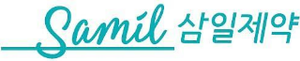
§17
AI 솔루션
규제 문서를 아는 AI
범용 챗봇이 아닙니다. 약전·가이드라인·용어집을 근거로 답하도록 만든, 규제 산업 전용 AI입니다.
GxP Chat
GxP 업무 맥락을 이해하는 특화 챗봇. 사내 SOP·문서 체계 위에서 동작합니다.
AI 번역
용어집 기반 번역으로 규제 문서의 용어 일관성을 지킵니다. 일반 번역기와 다른 지점입니다.
가이드라인 · 약전 Chat
글로벌 가이드라인 질의응답, 주요국 약전 비교. 찾는 데 쓰던 시간을 줄입니다.
MedIT
논문 기반 Chat. 근거 문헌을 함께 제시해 검증 가능한 답을 만듭니다.
§18
도입 조건
구독료 밖에
청구되는 것이 없습니다
온프레미스 GMP 시스템은 라이선스 위에 시설과 인력 비용이 계속 얹힙니다. Cloud SaaS 로 가면 아래 항목이 청구서에서 빠집니다.
청구서에서 빠지는 항목
- 서버실 · 랙 공간
- UPS · 무정전 전원
- 항온항습 설비
- 백업 장비 · 운영
- 전담 IT 관리자
남는 것월 구독료 하나입니다.
계약 조건
- 3년 총소유비용3억 미만
- 업그레이드2년 무상
- BQUBE 모듈 간 연동무상
초기 투자 없이 구독으로 시작합니다. 기능 개선은 업그레이드에 포함되고, 플랫폼 안의 모듈을 붙이는 데는 연동 비용을 따로 받지 않습니다.
§19
우리 회사는 어디쯤일까요
문서·품질·교육·시험·연구·데이터 무결성 6개 영역을 약 2분 만에 진단하고, 위 솔루션 가운데 먼저 손볼 곳을 바로 확인하세요. 결과는 도입 상담 신청서에 그대로 담아 드립니다.
§20
자주 묻는 질문
더 궁금하신 점은 아래 도입문의로 남겨 주세요.
도입까지 얼마나 걸리나요?
솔루션에 따라 6개월~1년이 걸리며, QMS는 약 1년이 필요합니다.
EDMS·QMS·LMS를 한 번에 도입해야 하나요?
하나부터 시작할 수 있습니다. 추가 솔루션 도입 시 기존 BQUBE 환경에서 메뉴만 확장하면 됩니다.
기존 MES·ERP를 교체해야 하나요?
교체하지 않아도 됩니다. MES·LIMS·ERP·e-HR·DRM·POP와 API 기반으로 연동하며, 기존 시스템 교체 없이 확장합니다.
On-Premise 구축도 가능한가요?
SaaS 구독형과 On-Premise 구축형 모두 가능합니다. DRM 등 사내 보안 정책과도 연동합니다.
CSV는 별도 업체에 맡겨야 하나요?
BQUBE를 개발한 조직의 자체 CSV팀이 GAMP 5 기반으로 IQ·OQ·PQ 전 단계를 직접 수행합니다. 업데이트에 따른 변경관리 CSV도 함께 제공합니다.
EDMS에 PDF도 올릴 수 있나요?
일반 파일로 업로드 가능합니다(Word·Excel·PPT 포함).
검토자 한 명이 반려하면 바로 반려되나요?
바로 반려되지 않고, 전원 검토가 끝난 뒤 상신자에게 반려됩니다.
✓ 문답 7건 중 도입 기간·메뉴 확장·연동·PDF·반려 5건은 KSLW 2026 책자(배포 완료본) 문구를 옮겼고, On-Premise 는 GxP사업부 소개 자료의 SaaS/On-Premise 비교표, CSV 는 책자의 One-Team·CSV 추진 전략 페이지가 근거입니다(2026-10-06).
§21
제품소개서
GxP 솔루션 소개서
솔루션별 기능과 실제 화면, 도입 효과, CSV 추진 전략을 정리한 자료입니다. 받으실 소개서를 고르고 메일 주소를 남겨 주시면 담당자가 보내드립니다.
신청은 도입문의로 접수되며, 영업일 기준 1일 이내 담당자가 입력하신 이메일로 PDF 를 보내드립니다.
✓ 2026-10-06 사용자 결정으로 직접 내려받기(
/docs/*.pdf)를 없애고 신청형으로 바꿨다. 운영본 접수 API 가 받는 칸(이름·이메일·연락처 필수, 회사명 선택)만 쓰고, 비밀번호는 자동 생성(신청자가 조회할 일이 없다). 접수는 분야 GxP · 유형 도입 문의 · 제목 "제품소개서 요청: …" 으로 들어가므로 관리자 문의 관리에서 그대로 보인다. PDF 원본은 0_지침·참고 제품소개서 폴더와 9월 박람회 전단지 확정본에 있다.
§22
도입문의
남겨주신 내용을 확인한 뒤 GxP 담당자가 연락드립니다. 영업일 기준 1일 이내 회신하며, 답변은 「내 문의 확인」에서 조회 비밀번호로 보실 수 있습니다.
영업일 기준 1일 이내 담당자가 회신합니다. 답변은 「내 문의 확인」에서 조회 비밀번호로 보실 수 있습니다.
✓ 폼은
/support/contact/의 접수 폼(운영본POST /api/inquiries와 같은 칸)을 빌드가 그대로 끼워 넣고 분야만 GxP 로 미리 고른다(build-pages.py<!--INQUIRY_FORM sol=…-->). 원고를 두 벌 두지 않는다.